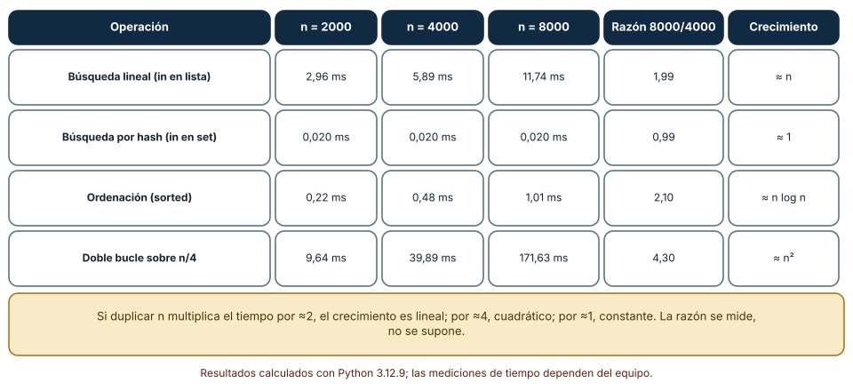
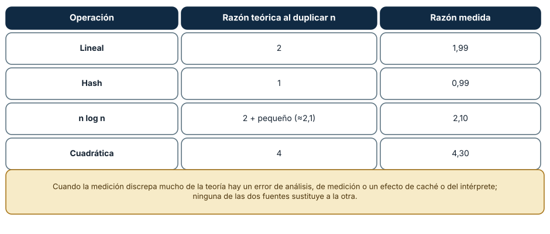
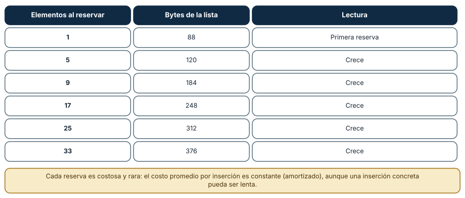

← SE-054 — Algoritmos, corrección y terminación · ↑ Parte 04 · 📚 Índice completo · 🌐 Portal · SE-056 — Heurísticas, aproximación y límites computacionales →
Punto profesional y fundamento pedagógico
Punto profesional. La clase existe para comparar crecimiento temporal y espacial antes de interpretar benchmarks.
Por qué aparece aquí. Se sitúa después de Algoritmos, corrección y terminación y antes de Heurísticas, aproximación y límites computacionales: convierte el conocimiento anterior en una decisión observable que la clase siguiente podrá reutilizar. La continuidad se comprueba en el artefacto, no por compartir vocabulario.
Error conceptual que debe corregir. Equiparar Big‑O con segundos o descartar constantes en cargas reales.
Secuencia de aprendizaje. Antes de leer la solución, el estudiante predice el resultado del caso normal y del error conceptual anterior. Luego explica un caso resuelto paso a paso, construye un contraejemplo que cambie la decisión y, sin consultar el texto, reconstruye el mecanismo y lo aplica a una entrada nueva. La secuencia usa predicción, explicación propia, contraste y recuperación. ICAP distingue participación de construcción de conocimiento; How People Learn II exige conectar conocimiento previo, contexto y transferencia; la práctica de recuperación respalda producir de nuevo la explicación tras una demora; y Education for Life and Work exige devolución que explique la causa del error.
Evidencia de aprendizaje. Complexity.md con conteo, cota, gráfica y medición que no contradiga su alcance. Debe contener predicción previa, observación, explicación causal, contraejemplo, criterio de aceptación y una nota de qué dato haría cambiar la conclusión.
Límite de la conclusión. El análisis asintótico no predice por sí solo el umbral práctico.
Trazabilidad fuente → afirmación
| Fuente primaria u oficial | Afirmación que respalda | Lo que no prueba |
|---|---|---|
| MIT 6.006 — Introduction to Algorithms | aporta definiciones, invariantes y análisis de estructuras y algoritmos usados en la clase | No demuestra por sí sola que el artefacto del estudiante sea correcto. |
| MIT 6.042J — Mathematics for Computer Science | aporta lógica, inducción, relaciones, grafos y técnicas de demostración aplicadas | No demuestra por sí sola que el artefacto del estudiante sea correcto. |
| MIT 18.404J — Theory of Computation | delimita computabilidad, complejidad y los límites de las soluciones algorítmicas | No demuestra por sí sola que el artefacto del estudiante sea correcto. |
Antes de empezar
Esta clase continúa el modelo de decisión diagnóstica, que convierte la evidencia de la petición observable de extremo a extremo en una siguiente decisión explicable. Recupera SE-054: escribe qué artefacto dejó, qué supuesto permanece abierto y qué propiedad debe sobrevivir al nuevo modelo. La matemática se usa para restringir interpretaciones y encontrar errores; no como ornamentación.
Prerrequisitos
- Poder separar hecho, interpretación, hipótesis y decisión.
- Manejar tablas, diagramas y pseudocódigo legible; Python es opcional.
- Trabajar con datos sintéticos del caso del modelo de decisión diagnóstica y conservar cada versión en Git.
Problema auténtico
El modelo de decisión diagnóstica funciona con 20 hipótesis y se bloquea con 20.000. Medir una sola máquina no explica crecimiento ni identifica si la entrada relevante es nodos, aristas o reglas. Hace falta análisis asintótico y medición honesta.
Objetivos observables
Al finalizar podrás explicar el mecanismo con ejemplo y contraejemplo; construir un modelo con dominio y límites; derivar una prueba que pueda refutarlo; comparar al menos dos representaciones; y entregar una decisión cuya evidencia pueda revisar otra persona.
Mapa conceptual
Ver la notación fuente del diagrama
flowchart LR
P[Problema situado] --> A[Abstracción explícita]
A --> R[Reglas e invariantes]
R --> S[Solución o estrategia]
S --> C[Casos y contraejemplos]
C --> E[Evidencia de aceptación]
E -->|modelo insuficiente| AEl mapa separa el problema de su representación. Los casos no reemplazan reglas; las reglas no prueban que el problema esté bien encuadrado. La pregunta de esta clase es: ¿Cómo crecen tiempo y memoria con el tamaño que realmente domina la carga?
Temas y por qué importan
| Lente | Pregunta | Evidencia |
|---|---|---|
| dominio | ¿qué entradas y estados existen? | vocabulario y particiones |
| estructura | ¿qué relaciones se conservan? | modelo interpretado |
| regla | ¿qué debe ser cierto? | contrato o invariante |
| estrategia | ¿qué pasos producen el resultado? | pseudocódigo y traza |
| límite | ¿dónde falla el argumento? | contraejemplo y caso límite |
Conceptos y decisiones
1. Modelo de costo y tamaño
Antes de contar se define operación básica y tamaño n. En un grafo importan V y E; reducir todo a n puede ocultar densidad. El modelo RAM abstrae costos constantes, pero cadenas, enteros grandes, caché y E/S pueden invalidar esa simplificación.
2. O, Ω y Θ
O acota crecimiento superior, Ω inferior y Θ ajustado bajo constantes. Decir que un algoritmo O(n²) también es O(n³) es cierto pero poco informativo. Las cotas se aplican a una función y régimen; no son tiempos en segundos.
3. Casos mejor, promedio y peor
El peor caso fija garantía; promedio exige distribución justificada; amortizado reparte secuencias de operaciones sin asumir azar. Presentar el caso favorable como promedio es un error. El modelo de decisión diagnóstica usa peor caso para deadline y medición para distribución observada.
4. Tiempo versus espacio
Guardar visitados usa O(V) memoria y evita repetir caminos exponencialmente. Un algoritmo in-place puede ahorrar memoria y complicar invariantes. La decisión considera límites del entorno y costo de recomputar, no una métrica aislada.
5. Análisis y benchmark
El análisis predice forma de crecimiento independiente del equipo; el benchmark captura constantes, runtime y datos. Se prueban tamaños crecientes, calentamiento, repeticiones y mediana/rango. Si la curva contradice el modelo, se investiga antes de concluir.
Duplicar n y mirar la razón
La notación O(·) describe cómo crece el costo, y la forma más honesta de comprobarla es duplicar el tamaño y dividir los tiempos. Medianas de cinco ejecuciones en CPython 3.12.9: la búsqueda lineal (x in lista) pasó de 5,89 ms con n = 4000 a 11,74 ms con 8000 (razón 1,99); la búsqueda por hash (x in set) se mantuvo en 0,020 ms (razón 0,99); sorted pasó de 0,48 a 1,01 ms (razón 2,10), y un doble bucle sobre n/4 pasó de 39,89 a 171,63 ms (razón 4,30). Una razón cercana a 2 indica crecimiento lineal; cercana a 4, cuadrático; cercana a 1, constante. La Figura 1 reúne los datos.

Cómo leer la figura. Las columnas son tres tamaños y la penúltima es la razón. Dónde deja de valer: son medianas de cinco ejecuciones en un equipo, con los efectos de caché y del intérprete incluidos. Con tamaños pequeños el ruido domina; con muy grandes aparecen cachés y memoria. Se mide un rango amplio, no un par de puntos.
Teoría y medición deben coincidir
La Figura 2 contrasta la razón esperada con la medida. Si una operación «lineal» dobla su tiempo, coinciden; si una «constante» triplica el tiempo, hay un error de análisis o un efecto oculto (por ejemplo, colisiones de hash). La coincidencia aporta confianza; la discrepancia es la pista valiosa. Ninguna fuente sustituye a la otra: el análisis explica *por qué* crece así y la medición confirma que la implementación real lo hace. Tampoco hay que confundir tiempo de reloj con conteo de operaciones: el conteo es reproducible y portable; el reloj depende del equipo.

Cómo leer la figura. Cada fila compara una predicción con un dato. Dónde deja de valer: n log n y n comparten una razón cercana a 2 en rangos chicos, así que distinguirlos exige tamaños más grandes o más puntos.
Costo amortizado
Añadir un elemento a una lista de Python es «O(1) amortizado». sys.getsizeof muestra por qué: al añadir elementos uno por uno el tamaño de la lista cambia solo en algunos puntos (88 bytes con 1 elemento, 120 con 5, 184 con 9, 248 con 17, 312 con 25, 376 con 33). La mayoría de las inserciones no reservan memoria; algunas sí, y son más costosas. El promedio por inserción es constante, pero una inserción concreta puede ser lenta. Esto importa en sistemas con requisitos de latencia: el promedio no es el peor caso.

Cómo leer la figura. Cada fila es un punto en que la lista reservó más memoria. Dónde deja de valer: las cifras dependen de la versión de CPython y de la arquitectura; el patrón (reservas espaciadas) es lo que se conserva.
Definiciones de trabajo
- complejidad: crecimiento de recursos respecto al tamaño.
- cota: límite matemático de crecimiento.
- peor caso: máximo costo entre entradas del mismo tamaño.
- amortizado: costo promedio garantizado sobre una secuencia.
- benchmark: medición controlada de una implementación.
Las definiciones fijan el uso en el modelo de decisión diagnóstica. Si una fuente usa otra convención, documenta la traducción. Una palabra definida no equivale a una propiedad demostrada.
Ejemplo mínimo
Cuenta comparaciones de búsqueda lineal y binaria para n=8,16,32. Declara precondición de orden de la binaria y explica cuándo ordenar primero elimina su ventaja.
Antes de resolver, predice el resultado y la propiedad que debería conservarse. Después marca qué parte del resultado procede de la regla y cuál depende del ejemplo.
Ejemplo profesional
El modelo de decisión diagnóstica modela recorrido O(V+E) y memoria O(V). El benchmark genera grafos dispersos y densos, separa construcción de consulta y registra versión. Un presupuesto cancela antes de agotar memoria y reporta salida parcial como incompleta.
La entrega profesional hace visible el costo de simplificar. Incluye al menos una alternativa descartada y la condición que obligaría a revisar la decisión.
Práctica guiada
- define tamaño y operación dominante.
- deriva una suma de costo.
- clasifica cota sin borrar variables.
- predice duplicar tamaño.
- mide cinco tamaños y compara tendencia.
- solicita una revisión adversarial y corrige el modelo sin borrar la versión que falló.
Ejercicios
- Razón: con tiempos 3,1 / 6,3 / 12,4 ms para n = 1000 / 2000 / 4000, calcula las razones y clasifica el crecimiento.
- Medición: mide
x in listayx in setpara tres tamaños y compara con la Figura 1 (declara tu equipo). - Amortizado: explica por qué una inserción puede ser lenta aunque el promedio sea constante y qué requisito lo haría un problema.
- Discrepancia: una operación teóricamente lineal triplica su tiempo al duplicar n; enumera dos causas posibles y una prueba para cada una.
Reto verificable
Entrega problem.md, model.md y checks.md. Una persona revisora debe poder reconstruir dominio, supuestos, regla, resultado y límite; además debe encontrar qué caso refutaría la solución sin preguntarte oralmente.
Demostración guiada
- Declara el dominio y selecciona un caso pequeño calculable a mano.
- Ejecuta la estrategia paso a paso y conserva estados intermedios.
- Comprueba el resultado contra la definición, no contra intuición.
- Introduce el fallo controlado y localiza la primera regla violada.
- Repara el modelo y repite el caso original y el contraejemplo.
Preguntas frecuentes
¿Cuál es la diferencia entre O(n) y el tiempo real?
O(n) describe la forma del crecimiento, no el valor: un algoritmo O(n) puede tardar más que uno O(n²) con n pequeño. La notación sirve para predecir qué pasa al crecer, no para comparar dos tamaños fijos.
¿Cuántas ejecuciones necesito para medir?
Varias, y se reporta la mediana o una distribución, no una sola. Cinco bastan para una primera idea; para decisiones se registran dispersión, versión y equipo.
¿Por qué la búsqueda por hash es «constante»?
Porque calcula una posición a partir de la clave. Es constante en promedio con una buena función hash y pocas colisiones; con claves adversariales puede degradarse, y por eso existen hashes con semilla aleatoria.
¿Qué es un costo amortizado?
El costo promedio por operación en una secuencia, aunque alguna operación sea cara. No garantiza el tiempo de una operación individual.
Fallo controlado y diagnóstico
Cronometra dos algoritmos una vez con n=10 y declara ganador universal. Repite con escala, múltiples series y separación de setup; documenta el punto de cruce.
Conserva el modelo fallido, la entrada que lo expone, la regla violada y la corrección. No ajustes solo el resultado esperado para hacer pasar el caso.
Mide con un tamaño demasiado pequeño y comprueba que la conclusión falla. Repite la comparación lineal frente a hash con n = 10 y n = 20: el ruido del reloj domina y las razones oscilan entre 0,5 y 3, de modo que podrías «demostrar» cualquier crecimiento. Síntoma: razones inconsistentes entre ejecuciones. Hipótesis: el tiempo medido es menor que la resolución y la variación del sistema. Prueba: repite con n = 2000, 4000 y 8000 y usa la mediana. Conclusión: la conclusión solo vale cuando la señal supera el ruido. Registra versión, equipo, repeticiones y rango en checks.md.
Errores comunes y cómo corregirlos
| Síntoma | Causa | Corrección |
|---|---|---|
| Se concluye un crecimiento con dos puntos | Muestra insuficiente | Medir al menos tres tamaños y comparar razones |
| Los resultados cambian entre ejecuciones | Una sola medición, ruido | Usar mediana de varias ejecuciones |
| «Es O(1)» y un caso tarda mucho | Se confundió amortizado con peor caso | Declarar si el dato es promedio o peor caso |
| La teoría dice lineal y el dato cuadrático | Costo oculto (copias, colisiones) | Buscar la operación escondida con un perfil |
| Se compara con un tamaño pequeño | O(n²) puede ganar con n chico | Probar el rango donde se usará |
Entorno y archivos clave
work/SE-055/
├── problem.md # contexto, dominio, supuestos y exclusiones
├── model.md # definiciones, reglas, diagrama y estrategia
├── checks.md # ejemplos, contraejemplos y aceptación
└── review.md # objeciones y revisión del modeloEl pseudocódigo debe ser independiente de lenguaje y cada diagrama necesita explicación textual. Si usas código para explorar, registra versión, entrada y salida; no lo presentes automáticamente como producto de la clase.
Laboratorio integrado de la Parte 04
Genera operation_counts() de la especificación contrastable para tamaños crecientes y deriva las expresiones lineal y por pares. Después, si mides tiempo, conserva versión, máquina y repeticiones por separado. La tendencia teórica no predice milisegundos universales y un benchmark pequeño no refuta una cota asintótica.
Seguridad, ética y accesibilidad
- usa incidentes sintéticos y evita convertir direcciones o usuarios en datos de práctica;
- trata autorización y privacidad como invariantes, no como pasos opcionales;
- registra a quién perjudica un falso positivo, falso negativo o prioridad automática;
- ofrece tablas y texto alternativo para diagramas y símbolos;
- define mecanismo de revisión humana y apelación para recomendaciones;
- no uses un modelo parcial para justificar una decisión irreversible.
Puente hacia el trabajo con agentes
El costo de un agente no se mide en segundos sino en llamadas, tokens y herramientas, y crece con la longitud del contexto y el número de pasos. La misma disciplina aplica: contar operaciones (llamadas, tokens) es reproducible, el tiempo de reloj no; y duplicar el tamaño de la tarea y mirar la razón revela si el costo es lineal o cuadrático (un agente que reenvía todo el historial en cada paso tiene costo cuadrático en el número de pasos). El presupuesto del harness debe expresarse en esas unidades.
Transferencia
Aplica el mecanismo a otro dominio y conserva la estructura del argumento, no los nombres del modelo de decisión diagnóstica. Explica qué dominio, invariante o medida cambia. Si el razonamiento deja de funcionar, identifica el supuesto que pertenecía al caso original.
Evaluación y evidencia
| Criterio | Para aprobar |
|---|---|
| precisión | dominio, términos y cuantificadores explícitos |
| mecanismo | pasos y relaciones explican el resultado |
| corrección | invariantes, casos o argumento adecuados a la afirmación |
| límites | contraejemplo, costo y supuestos visibles |
| revisión | trazabilidad y objeciones preservadas |
Completar archivos no concede aprobación. La evidencia debe sostener la afirmación exacta, y la revisión de otra persona debe poder contradecirla.
Fuentes
- MIT 6.006 — Introduction to Algorithms — aporta definiciones, invariantes y análisis de estructuras y algoritmos usados en la clase.
- MIT 6.042J — Mathematics for Computer Science — aporta lógica, inducción, relaciones, grafos y técnicas de demostración aplicadas.
- MIT 18.404J — Theory of Computation — delimita computabilidad, complejidad y los límites de las soluciones algorítmicas.
Los cursos y SWEBOK aportan definiciones y métodos; no validan automáticamente el modelo del modelo de decisión diagnóstica. Cada aplicación se sostiene con el artefacto y sus casos.
- Python: complejidad de las operaciones de los tipos integrados: costos promedio y de peor caso de lista, conjunto y diccionario, usados para contrastar la Figura 2.
- Python:
time.perf_counterytimeit: herramientas de medición y advertencias sobre su uso. - Thomas Cormen, Charles Leiserson, Ronald Rivest y Clifford Stein, *Introduction to Algorithms* (MIT Press): notación asintótica y análisis amortizado.
Límites y siguiente paso
Complejidad asintótica no sustituye perfilado ni incluye automáticamente red y energía. La próxima clase aborda problemas donde exactitud completa resulta demasiado costosa o imposible.
Glosario
- complejidad: crecimiento de recursos respecto al tamaño.
- cota: límite matemático de crecimiento.
- peor caso: máximo costo entre entradas del mismo tamaño.
- amortizado: costo promedio garantizado sobre una secuencia.
- benchmark: medición controlada de una implementación.
← SE-054 — Algoritmos, corrección y terminación · ↑ Parte 04 · 📚 Índice completo · 🌐 Portal · SE-056 — Heurísticas, aproximación y límites computacionales →